Haare, Nägel, Make-up und Pflege an einem Ort. Dieses Konzept zeigt, wie ein Beauty-Studio online auftreten kann: ruhig, hell und mit Fotos, auf denen kleine Details sacht die Farbe wechseln.
Termin anfragenFarbspiel ansehen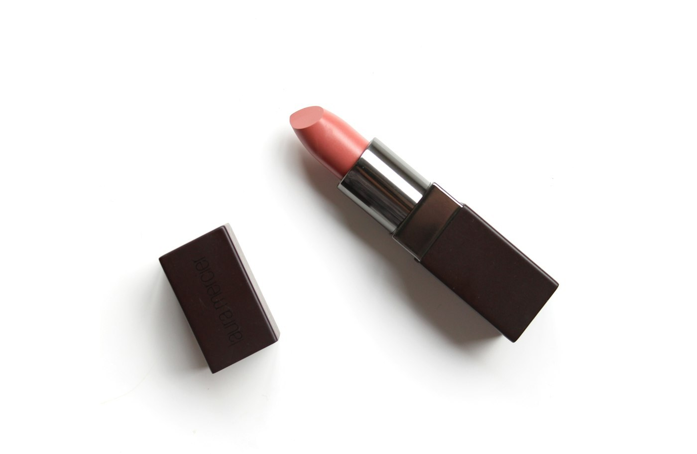
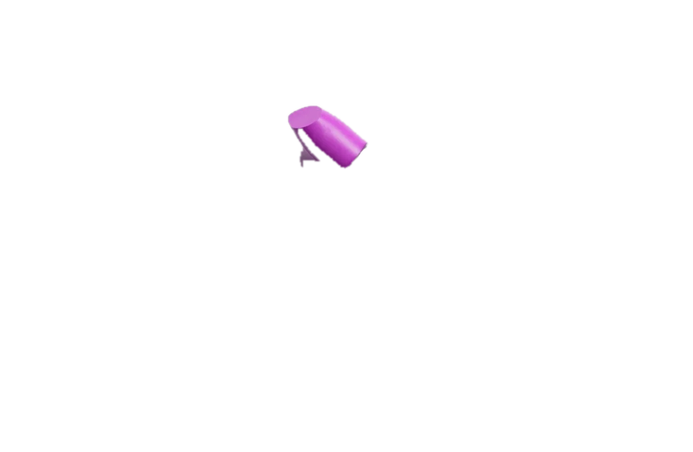
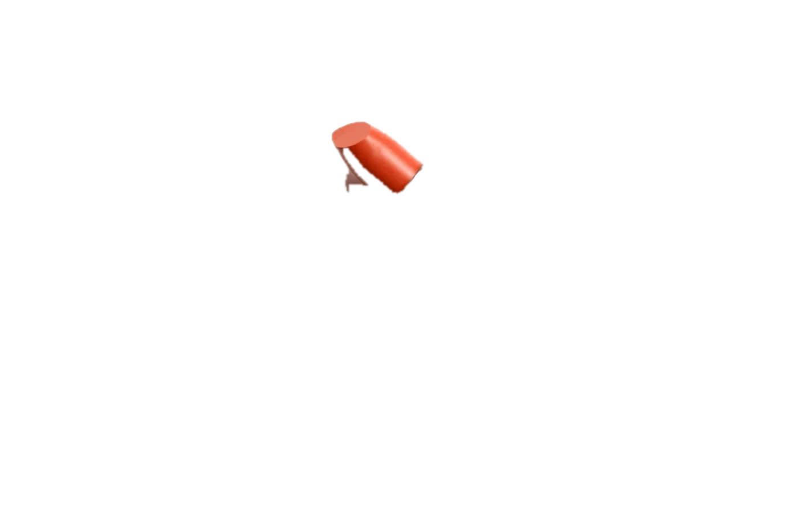
Beispieltexte für ein fiktives Studio. Preise, Zeiten und Angebote werden mit dem echten Betrieb festgelegt und stehen hier bewusst nicht.
Schnitt, Farbe und Pflege nach Beratung, passend zu Typ und Alltag.
Maniküre und Nagellack in ruhigen oder mutigen Farben.
Looks für Alltag und Anlass, auf Wunsch mit Farbberatung.
Hautpflege und Entspannung mit schonenden Produkten.
Die Fotos bleiben, wie sie sind. Nur einzelne Details wechseln sacht die Farbe: Lippenstifte, Farbstriche, Lidschatten und Blätter im Herbstton. Ein Klick öffnet das Foto im Vollbild, auch quer auf dem Handy.
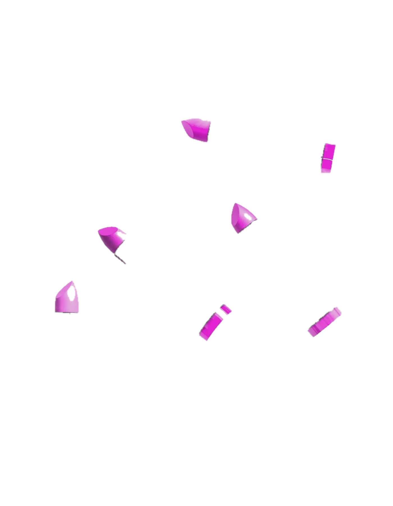
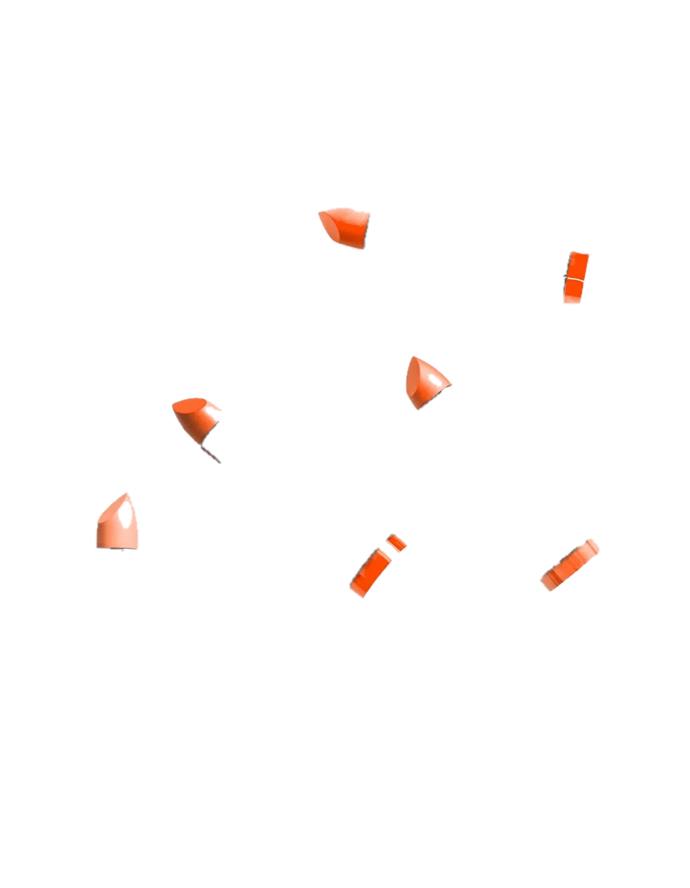
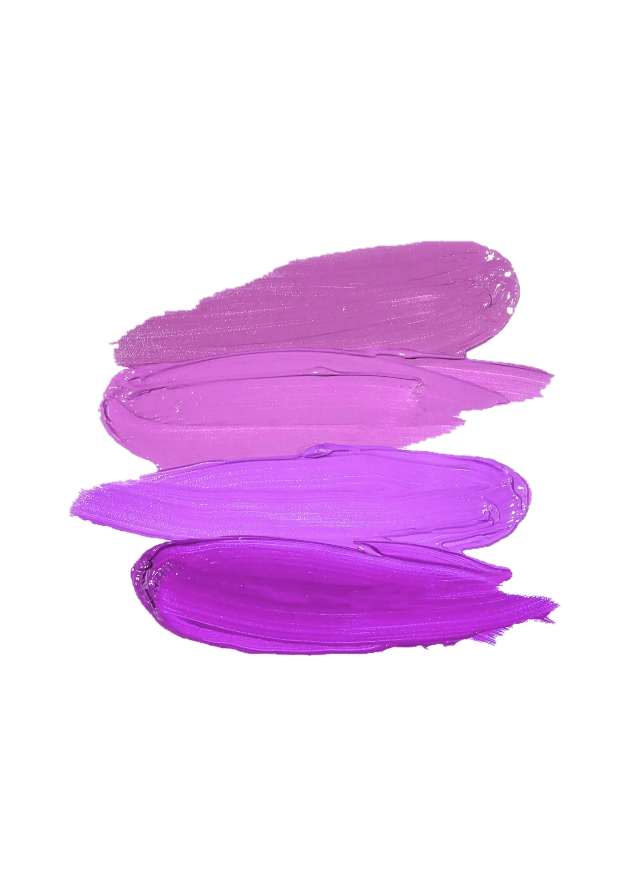
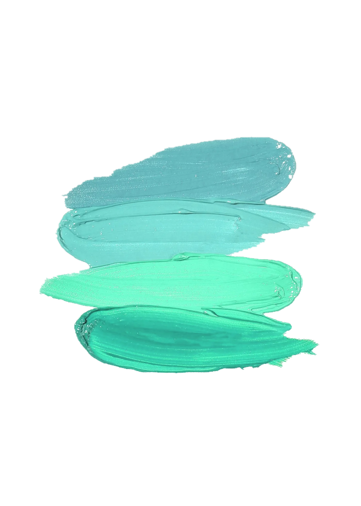
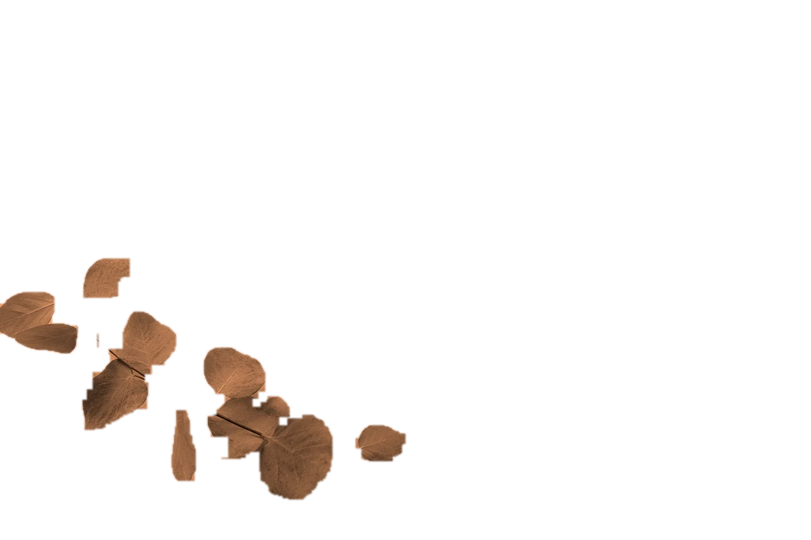
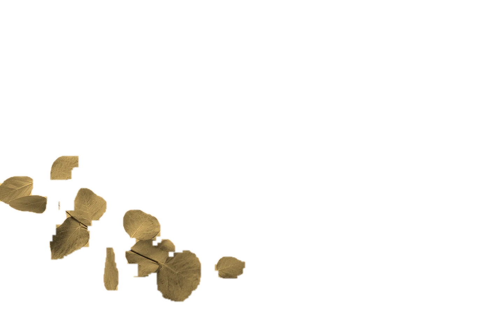
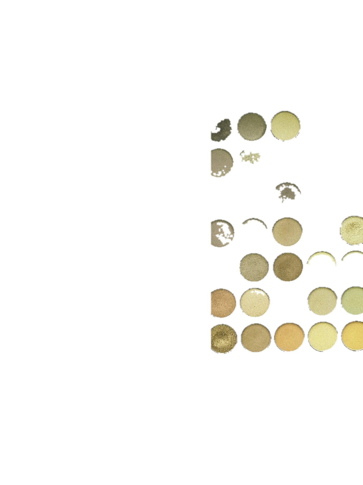
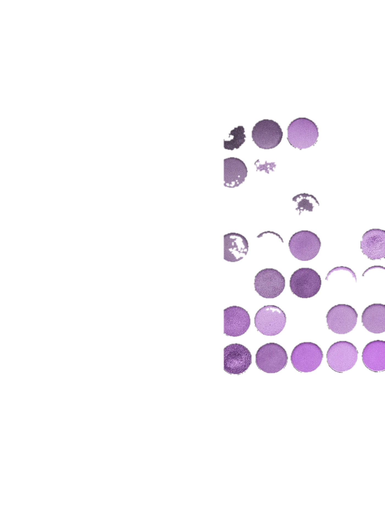
Beispielablauf für das Konzept.
Wir sprechen über Wünsche, Typ und Alltag und wählen gemeinsam Farben.
Ruhig und sorgfältig, mit Produkten, die zu dir passen.
Du bekommst Empfehlungen für zu Hause, damit das Ergebnis lange hält.
In diesem Konzept ist die Anfrage ein Beispiel. Bei einer echten Webseite führt sie direkt zu Ihrem Kalender oder Formular.
Ähnliche Webseite anfragenBeispielprojekt von SECRET 58: „Studio Beispiel“ ist ein erfundener Name. Es gibt keine echten Kunden, Preise, Öffnungszeiten oder Bewertungen. Fotos von Unsplash, Farbänderungen sind Demonstrationen am Beispielmaterial.